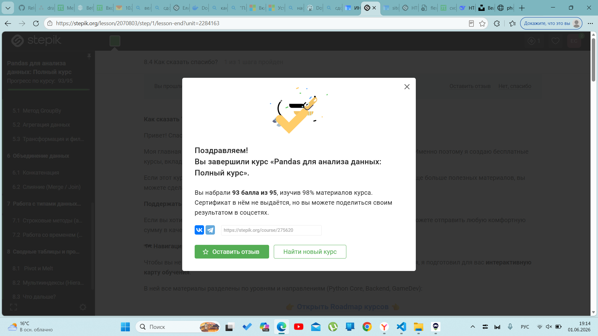
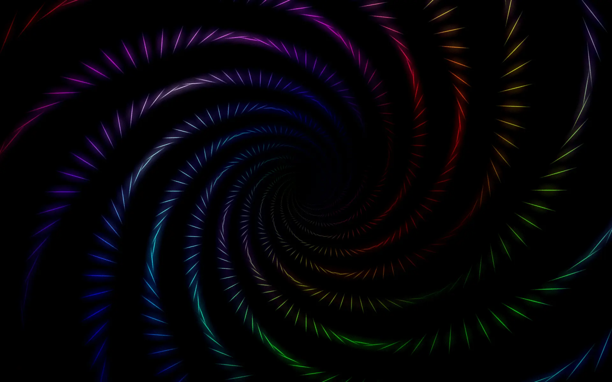

Формат JPG — идеален для фотографий. Хорошо сжимает изображения с плавными переходами цветов, но не поддерживает прозрачность.

Формат PNG — лучший выбор для скриншотов. Сохраняет чёткие границы текста и элементов интерфейса, поддерживает прозрачность, но весит больше JPG.
Формат SVG — векторный формат для иконок и логотипов. Не теряет качества при любом масштабировании, весит очень мало, идеален для адаптивных сайтов.

Формат WebP — современный формат от Google. Поддерживает и статичные, и анимированные изображения, сжимает на 25-35% лучше JPG и PNG при том же качестве.